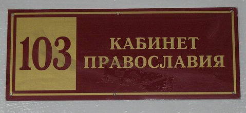

http://absentis.livejournal.com
Absentis
Житие отца Феропонта
ОПК. Урок первый
Отец Ферапонт вошел в класс ровно со звонком. Галдящие дети быстро притихли и разбежались по партам. Батюшка неспешно прошествовал к учительскому столу и торжественно возложил на него Библию.
— Дети мои, — густым голосом начал урок отец Ферапонт. — Мы с вами уже изучили десять заповедей и нагорную проповедь. Вы уже знаете, насколько Господь любит вас. А сегодня я хотел бы поговорить об одном очень интересном аспекте Библии — о чудесах. В Библии описано много Божественных чудес, и стоит только узнать о них, как даже у последнего неверующего не останется сомнений в силе Господа. Ведь чудеса в Библии подтверждают Слово Божие и достоверность избранных им пророков и апостолов.
Чувствовалось, что батюшка очень рад нести слово Божие детям. А особенно был доволен тем, что несет он это слово именно школьникам. Ибо в университетах и институтах, как рассказывали ему коллеги, иногда можно было попасть в неприятные ситуации. Некоторые закостеневшие в свое неверии безбожники-студенты часто пытались задавать каверзные вопросы. Да и не вопросы, собственно, они задавали, а просто издевались по бесовскому наущению. Как рассказывал, например, отец Серафим, его как-то спросили, правда ли то, что слово кретин происходит от слова христианин*. И даже словарь Даля выкрутится отцу Серафиму не помог, хотя напрямую это там не сказано. А вот отца Евлампия некий студент спросил, правда ли то, что выражение фокус-покус напрямую связано с самым важным таинством Церкви — святой Евхаристией**. Отца Евлампия чуть удар не схватил от такого богохульства, но возразить он ничего не смог, только выгнал нечестивца из аудитории.
Маленькие детки, сидящие перед отцом Ферапонтом, такой опасности не представляли. Поэтому отец Ферапонт чувствовал себя уверенно и расслабленно. Он напомнил детям, что «всякое познание — грех, если оно не имеет целью познание Бога», как учил святой Фома Аквинский. Поэтому уроки Основ Православной Культуры — это единственное полезное занятие в школе. Потом, решив, что авторитета Аквината все же явно недостаточно для православного, пояснил эту мысль словами Евсевия от IV-го века: «Не по невежеству ставили мы низко науки, но из презрения к их совершенной бесполезности». Потом батюшка перешел непосредственно к библейским чудесам. Сначала он объяснил ученикам, что главное чудо — воскрешение Христа — они будут рассматривать на следующих уроках, а сейчас он поведает им о чудесах менее значимых. Он взял в руки Библию и познакомил отроков и отроковиц с чудом воскрешения Лазаря. Потом рассказал о чуде пяти хлебов. Затем поведал ученикам о чуде непорочного зачатия и о хождении по воде. Батюшка так увлекся, что ходил взад-вперед по классу с горящими глазами почти в состоянии религиозного экстаза. Взволнованным голосом он рассказывал детям об изгнаниях бесов, о погибших свиньях и о чудесных исцелениях.
 — Как лечил всех этих несчастных Господь наш, Иисус Христос? Cлюной свой божественной! Он плевал на всех! — вещал отец Ферапонт. — Как Он вылечил несчастного слепого? Марк в восьмой главе пишет в двадцать третьем стихе: «взяв слепого за руку, вывел его вон из селения и, плюнув ему на глаза». А как Он вылечил другого слепого? Только помазав его глаза своей слюной, как говорит нам Иоанн в девятой главе, стих шестой. И то же говорит нам Марк об излечении косноязычного: «и, плюнув, коснулся языка его», глава седьмая, стих тридцать третий. Вот почему Юлиан Галикарнасский утверждал, что «и слезы Христа были нетленны, и плюновение божественно», а протоиерей Георгий Флоровский писал: «Самое плюновение Христа было божественным». Вот в чем заключалась сила Христа!
— Как лечил всех этих несчастных Господь наш, Иисус Христос? Cлюной свой божественной! Он плевал на всех! — вещал отец Ферапонт. — Как Он вылечил несчастного слепого? Марк в восьмой главе пишет в двадцать третьем стихе: «взяв слепого за руку, вывел его вон из селения и, плюнув ему на глаза». А как Он вылечил другого слепого? Только помазав его глаза своей слюной, как говорит нам Иоанн в девятой главе, стих шестой. И то же говорит нам Марк об излечении косноязычного: «и, плюнув, коснулся языка его», глава седьмая, стих тридцать третий. Вот почему Юлиан Галикарнасский утверждал, что «и слезы Христа были нетленны, и плюновение божественно», а протоиерей Георгий Флоровский писал: «Самое плюновение Христа было божественным». Вот в чем заключалась сила Христа!
Отец Ферапонт долго рассказывал о чудесах Апостолов, особенно отмечая смертельную силу Петра, убивающего одним взглядом тех, кто не отдал христианской общине все свои деньги, посмев утаить малую часть после продажи своего имения, как Ананий с женою своею Сапфирою (Деян. 5:5-10). Затем поведал притихшему классу, что не только те чудеса совершались, что видим мы в Евангелиях. Ибо еще «Много сотворил Иисус пред учениками Своими и других чудес, о которых не писано в книге сей» (Иоанн 20:30). И не только Иисус совершал их. Чудеса Божии начались еще во времена древние, и записаны в Ветхом Завете. Ах, какие там великолепные чудеса!
Чего только стоят воды расступавшиеся перед Моисеем и перед Илией! Но и это ничто по сравнению с другими чудесами, творимыми с Божией помощью святыми праведниками. Ведь только истинный праведник Лот мог напиться до потери сознания, но сохранить в себе силы оплодотворить обеих своих дочерей. Только настоящий святой пророк Елисей мог воззвать к Господу о возмездии мерзким детям, дразнившим его. И сразу услышал Господь просьбу любимца своего и послал медведей на помощь. «Он оглянулся и увидел их и проклял их именем Господним. И вышли две медведицы из леса и растерзали из них сорок два ребенка» (4 Цар 2:24). И так было велика данная Богом сила Елисея, что не только одной мыслью выуживал он топоры из речки, но всего одним словом мог наслать смертельную проказу, как на Гиезия (4 Цар. 5:27).
А какова чудесная сила ослов в Библии? Даже простая ослиная челюсть обладает невиданной мощью: «Нашел он свежую ослиную челюсть и, протянув руку свою, взял ее, и убил ею тысячу человек» (Суд. 15:16). Ослы вообще всегда пользовались особой любовью Господа. Ведь только им позволял он разговаривать с людьми: «И отверз Господь уста ослицы, и она сказала Валааму: что я тебе сделала..» (Чис. 22:28).
Долго еще вещал отец Ферапонт о дубах, хватающих за волосы Авессалома, и о змее Аарона, пожравшей змей придворных колдунов. Он припомнил и песьих мух, и воскишевшую жабами реку, и воду в реке, превратившуюся в кровь.
Потом он опять вернулся к Новому Завету и особенно отметил силу Христа в деле оживления тел многочисленных покойников в гробах (Мат 27:53) и засушивания смоковниц. Увидев же, что у него осталось еще пять минут до конца урока, батюшка успел привести несколько примеров из Житий Святых, таких как Житие святого отца нашего Епифания, еще после смерти сохранившего силу благословления для любопытного, подошедшего к нему: «умерший чудотворец, поднявши свою правую ногу, столь сильно ударил ею в лице любопытного, что он далеко упал от тела и умер».
Прозвенел звонок. Батюшка закончил свою проповедь и обратился к классу:
— Видите ли вы теперь, дети мои, как сильно Господь любит вас, и как велики и несомненны его чудеса? Неужели кто-нибудь еще сомневается в истинности чудес Божиих?
Дети молчали.
***
Священник победным взглядом оглядел притихший класс. Он был доволен. Если еще не вера, то внимание и интерес увиделись отцу Ферапонту в глазах учеников. А ведь некоторые чиновники в епархии отговаривали его от преподавания Основ Православной Культуры! Говорили, что он не справится, что это очень сложная работа. Но разве Христос не велел идти по всему миру и нести всем тварям живое Слово Божие? Если не он, Ферапонт, то кто же?
Священник еще раз обвел взглядом класс и выбрал долговязого парня в очках.
— Сын мой, — нараспев протянул отец Ферапонт. — Уверовал ли ты в силу Господа нашего?
— Да, батюшка, — искренне ответил ученик.
Но какие-то нотки в его голосе все же насторожили отца Ферапонта. Все эти очкарики-отличники никогда не вызывали у него доверия. Вот то ли дело та девочка с широко раскрытыми глазами, сидящая за последней партой. Отцу Ферапонту показалось, что в ее глазах уже затлели огоньки веры.
— И тебя не смутило бы, — продолжил отец Ферапонт допрашивать ученика. — Если бы с тобой, например, заговорила ослица?
— Нет, не смутило бы, — ответил ученик, — теперь я верю, что и такое бывает.
Батюшка довольно усмехнулся, машинально поглаживая крест на пузе.
— Но разве твои учителя не пытались тебе внушить на уроках... этих, как ее.. — Ферапонт поморщился, произнося мерзкое слово, — биологии, что ослы не разговаривают?
— Они заблуждались, — без тени сомнения ответил ученик и почему-то очень внимательно посмотрел на отца Ферапонта. — Теперь я абсолютно точно знаю, что ослы разговаривают.
Класс одобрительно загудел. Отец Ферапонт умиленно разглядывал свою будущую паству. Слезы радости блеснули в его глазах. Ему все же удалось достучатся до этих зачерствевших в неверии сердец, удалось донести до них Слово Божие!
* Наконец, еще один медицинский термин – кретин. В медицине кретинизм – это резкое отставание физического и умственного развития в связи с недостаточной активностью щитовидной железы или недостатком йода в рационе. Зародилось это слово во французской Швейцарии, во франко-провансальском языке (известно с 1660 года). Там, в Альпах, были сравнительно часты случаи слабоумия из-за недостатка йода, которое часто случается в горных областях. Слабоумных называли словом crétin, восходящим к латинскому christianus ‘христианин’. Видимо, изначально это был эвфемизм, появившийся не без влияния того, что нищие духом считаются близкими к богу. Именно форма на -in указывает на франко-провансальское происхождение слова, в литературном французском christianus дало chrétien ‘христианин’. Во французском crétin впервые отмечено в 1750 году, тогда оно обозначало именно слабоумных, встречающихся в горной Швейцарии. О них рассказывает и статья Crétins в «Энциклопедии» Дени Дидро. Потом это слово стало обозначать просто дурачка. Сначала для этого употреблялись выражение crétin des Alpes ‘кретин с Альп’ или crétin du Valais ‘кретин из Вале (швейцарский кантон)’, а потом стали просто говорить crétin.
crétinиз christianus представляет собой русское благой, которое в диалектах употребляется иногда в значениях ‘сумасшедший’, ‘дикий’, ‘вздорный’, ‘своенравный’. Даль по поводу слова благой писал «выражает два противоположные качества». Выражения блажь и кричать благим матом, устаревшее слово блажной – остатки именно второго значения. Также в русском языке было божевольный, например у того же Даля: «юродивый ‘безумный, божевольный, сумасшедший’». ©
Толковый словарь Даля: КРЕТИН — м. кретинка ж. юродивые горных стран Европы; они тупы, даже малоумны, уродливы, зобасты.
** (Фокус-покус, hokuspokus (нем.) hocus-pocus (англ.): мошенничество, надувательство, обман). Мессу в Европе служили на латыни (год назад эта традиция была формально восстановлена). Самый волнующий момент — превращение хлеба в тело — провозглашал священник: hoc est corpus! — сие есть тело. Прихожане в большинстве своем латыни не знали, и для них эти слова звучали просто бессмысленным магическим заклинанием. Поэтому многие фокусники, вынимая монетку из уха зрителя или выпуская голубей из пустого ящика, выкрикивали именно это словосочетание: hocus-pocus! Такое объяснение предложил еще 1694 году англиканский прелат Джон Тиллотсон, который писал:"По всей вероятности, обычные слова фокусников "фокус-покус" есть ни что иное, как искаженное от "hoc est corpus", то есть того выражения, посредством которого священники католической церкви производят свою нелепую имитацию в их трюке Евхаристии."
ср. также шведское Hokus Pokus Filiokus Католики, естественно, вышеуказанную этимологию отвергают.
ОПК. Урок второй
Вместо эпиграфа:
| 113 | Зырянин |
| 14-5-2003 10:59 | |
| Вопрос о том, имеет ли Причащение религиозные и культурные корни в ритуальном каннибализме, поднимался еще с первых веков по Р.Х. (оппонентами христианства, языческими авторами). И для того, чтобы на него ответить научно-содержательно, а не по-обывательски - глубокое знание традиции монотеистического богослужения просто-напросто необходимо. И те авторы, которые таким знанием обладают (тот же Мирча Элиаде) - нигде не пишут чушь про "ритуальное людоедство христиан". |
(from Изба-Дебатня. Атеистический форум. Тема №729, форматирование сохранено)
Отец Ферапонт навытяжку стоял перед руководителем Катехизаторского отдела Епархиального управления иереем Дионисием.
— Да, жалуются, — продолжал выговаривать Дионисий. — Говорят, например, ты слишком много детям об ослах рассказываешь...
— Ну а как же без ослов, это же всегда была наша святыня, — растерялся отец Ферапонт. — Ведь и Господь наш на осляти через врата въехал в Иерусалим, дабы пророчество...
— «На осляти пророчество исполняти», — перекривился Дионисий. — Как скучно звучит. Ты же детям преподаешь, им трудно сосредоточится, им нужно рассказывать что-то забавное, что их заинтересует. То, что им наверняка запомнится. Как это они говорят, прикольное. Но тут главное не переборщить в занимательности. А то с тебя станется им еще рассказать, что ранние христиане поклонялись ослиной голове и про распятого на кресте человека-осла с Палатинского холма. Тут грамотно надо действовать. Вот даже о тех же ослах — посмотри как наш диакон Кураев правильно пишет… Иерей подошел к шкафу, взял с полки книгу «Дары и анафемы», открыл и зачитал: «Христос въехал в Святой град на ослике… И на Руси в Вербное воскресенье Патриарха, на тот момент являвшего собою образ Христа, ввозили в Кремль… Вот только ослов на Руси не водилось. Но выход из положения нашли: лошади (ведомой под уздцы царем), на которой ехал Патриарх, привязывали ослиные уши…». — Вот! Чувствуешь перо профессионала? Это забавно, и дети запомнят. Они же прекрасно знают присказку «от мертвого осла уши», и теперь при любом упоминании осла они будут сразу вспоминать Господа нашего. А как иначе мы сможем спасти их души, если не завлечем их? Какие тогда из нас ловцы человеков?
Отец Ферапонт подавленно молчал. Дионисий подошел к шкафу, взял несколько книг и протянул Ферапонту.
— Знаю, что ты, кроме псалтыря, ничего не читаешь. Но надо развиваться, читать известных религиоведов, таких как Мирча Элиаде, на уровне надо быть, понимаешь? А иначе всякие сладкоязычные Свидетели Иеговы детям покажутся привлекательней. И вот еще что — до тех пор, пока не прочитаешь, будешь преподавать только в самых младших классах. Как раз вчера отец Феофан уехал на съезд миссионеров, его класс пока и возьмешь. Он преподаватель опытный, воспитывать детей в духе православного благочестия умеет хорошо, проблем у тебя возникнуть не должно. Иди, урок через два часа. С Богом!
Ферапонт взял книги, перекрестился и неспешным шагом пошел в школу.
***
Отец Ферапонт вошел в класс ровно со звонком. Дети сидели смирно, опустив глаза. Чувствовалось, что Основы Культуры* им уже хорошо преподал опытный священник. Ферапонт неспешно прошествовал к учительскому столу и, как обычно, торжественно возложил на него Библию.
— Дети мои, — густым голосом вопросил отец Ферапонт. — О чем на последнем уроке говорил вам батюшка Феофан?
Девочка в платочке с первой парты подняла руку.
— Молви, дочь моя, — благодушно разрешил отец Ферапонт.
— На последнем уроке мы изучали Православную Азбуку, и батюшка Феофан наказал нам выучить каждому по своей букве о самом Главном в Церкви...
— Вот как! — обрадовался отец Ферапонт. — Ну что ж, дочь моя, ты и рассказывай первой.
— Буква Е, — благочестиво потупив взор, молвила отроковица и зачитала стихотворение:
Е — Евхаристия — это великая тайна!
Совершается в храме она не случайно:
Сам Господь заповедовал нам причащаться
Его Тела и Крови Святой приобщаться:
Чтобы в нас был Христос, и мы в нем прибывали,
Чтоб избавил Он нас от грехов и печали,
Чтобы светом Его наши души святились,
Нужно, чтобы достойно мы все причастились! ©

— Так-так, — обрадовался отец Ферапонт. — А вот теперь ты, сын мой.
Батюшка ткнул толстым пальцем в краснощекого ученика с последней парты.
— Буква Л, — без запинки ответствовал тот и зачитал:
Л — Литургия
В ней — самих Небес шаги, и
Благодатный Божий Свет.
Знай: важнее Литургии
Ничего на свете нет! © «Тихоновский Благовест»
Отец Ферапонт потер руки от удовольствия и указал на рассеяно смотрящую перед собой отроковицу с пятой парты. Она казалась старше остальных детей — явно второгодница. Батюшке почему-то показалось, что она не справится с ответом. Девочка, робея, встала.
— Как зовут тебя, дитя, и какую букву приготовила ты нам? — благодушно промурлыкал батюшка.
— Раба Божия Машенька, буква П, — запинаясь и краснея тихо проговорила девочка, но стишок рассказала довольно быстро:
П — Причастие — есть хлеб с вином
В священной чудной Чаше.
Зовется Таинством оно.
В нем жизнь, спасенье наше. © Русская Православная азбука
Отец Ферапонт взволновано ходил по классу, машинально гладя живот и причмокивая. Дети продолжали радовать знанием всех букв алфавита. Карапуз со второй парты рассказал про букву С:
С — Святое Причащение
Бог, под видом вина и хлеба,
Сходит на Литургии с Неба.
К Чаше идя, будь к себе очень строг:
Через мгновенье
Войдет в тебя — Бог! © Православная азбука.
(Маленькие читатели, специально для вас детский писатель Евгений САНИН написал «Православную азбуку». Читайте и умнйте)
А болезненного вида дохлятик из самого угла класса звонким голосом продекламировал про букву Ч:
Ч — Чаша с Божьими Дарами.
Песнопение плывет.
Всё ликует в Божьем храме –
Причащается народ! © Русская Православная азбука
— Хорошо, хорошо, — довольно пропел отец Ферапонт, — хоть и негоже вас хвалить, овечки мои, дабы не впадали вы во грех гордыни, но... Одно должен вам я еще сказать о нашем Великом Таинстве... Даже не старайтесь понять, что за ним стоит, ибо это непознаваемо слабому уму человеческому. Ведь не зря Тайны Христовы в Православии называют еще Страшными, указывая на недоступность понимания этой Тайны человеку и его трепет перед ней!
За этот урок дети успели назвать почти все буквы. Батюшка даже вошел в азарт и старался угадывать. Он правильно догадался, что на букву Д будут «Дары Святые», на букву Я — старое «Ядите тело мое», а на букву К — «Копие разрежет жертву». Поскольку учеников было больше, чем букв в алфавите, некоторые буквы повторялись по два раза. Единственной буквой, которую Ферапонт не угадал, была С. Оказалось — «Срачица». А Ферапонт думал, что будет «Сладчайший Иисусе». Но зато батюшка сразу догадался, что на букву А будет «Агнец закланный на обедне». А вот про вторую А отец Ферапонт дослушать не успел — раб Божий Петенька только начал «Апостолы очень любили Его...», как урок кончился.
Прозвенел звонок, и дети, крестясь, степенно вышли из класса.
Только рабы Божие Васенька и Вовочка не успели ответить про буквы Ж и Х. Но, наверняка, это были «Жертва» и «Христос».
Давно детишки не радовали так отца Ферапонта. В блаженном состоянии, со слезами умиления, возвращался батюшка домой, вспоминая этих нежных Божиих овечек. Да, умеет отец Феофан воспитывать послушных и богоугодных детишек. Прав Дионисий, учиться надо такому искусству. Приехав домой, отец Ферапонт помолился, взял книгу, рекомендованную Дионисием, и принялся за познавательное чтение Элиаде:
— Когда понимаешь логику и даже благородство, красоту мифологии, да и теологии, лежащих в основе каннибализма... когда понимаешь, что речь идет не о звериных повадках, а о человеческом действе, что человек, в своем качестве существа, свободного принимать решения, решил убивать и поедать ближнего своего, — так вот, тогда твой дух невольно подвергается искушению огромной свободы, которая открывается перед ним: выходит, можно убивать и быть каннибалом, не теряя “человеческого достоинства”.
— Слушая вас, я подумал о Пазолини, о том, как навязчиво в его творчестве присутствует мотив каннибальского пиршества. Пиршества, которое в его “Свинарнике” означает Тайную вечерю...
— Пазолини преследовала мысль о вырождении человека — не до животного уровня, но до другого уровня культуры. Каннибализм — вещь бессмысленная, если он не носит ритуального характера, если не принадлежит к общественным установлениям. К тому же христианин, который размышляет о святых тайнах, естественно приходит к мысли, что он тоже каннибал.
© Мирча Элиаде. Испытание лабиринтом. Беседы с Клодом-Анри Роке.
Примечание: «Если встретятся трудности с преподаванием основ православного вероучения назвать курс „Основы православной культуры“, это не вызовет возражений у педагогов и директоров светских учебных заведений...» Письмо Патриарха Алексия II № 5925 от 9 декабря 1999 г.
ОПК. Урок третий
Образование должно быть только церковным. Нехристианское образование заведомо разрушительно и должно быть разрушено © о. Даниил (Сысоев) Надо, наконец, развенчать химеру так называемого научного мировоззрения © протоиерей Всеволод Чаплин Задача миссионера – привести людей к Богу. Поэтому не надо увлекаться культурологией – это лишь внешнее знание, ничего не дающее... Школа или детский сад — сложный участок идеологической борьбы... Отсюда вытекают главные правила ведения бесед: Использовать простой разговорный язык, лишь понемногу вводя незнакомые слова... Использование понятия пользы... Необходимость принуждения, внешней сдерживающей силы (например, административного ресурса) до появления интереса у слушателей. ...Не следует забывать, что дети находятся под воздействием бесов. © Миссионерский отдел Московского Патриархата, 2009 |
Отец Ферапонт робко проскользнул в дверь Катехизаторского отдела Епархиального управления. Руководитель отдела иерей Дионисий нехотя поднял голову и отложил в сторону книжку про Гарри Поттера.
— Ознакамливаюсь. — пояснил иерей, заметив настороженный взгляд Ферапонта. — Дьякон Кураев рекомендует. Нам надо идти в ногу со временем, знать, чем живет молодежь. А а то ведь свято место пусто не бывает, и если мы, ловцы человеков, спугнем овечек своей косностью, то кому эти овечки достанутся на съедение? То-то и оно, миссионеры из страны заходящего солнца не дремлют. Так и рыщут вокруг конкуренты наши, аки лев рыкающий… Ну, что скажешь? Как у тебя с новым классом?
— Плохо… — откровенно выдохнул отец Ферапонт. — Я, собственно, и пришел поинтересоваться… Не справляюсь я. Вот прошлый мой класс — совсем другое дело было. Там детки послушные были, богобоязненные. А эти…
Отец Ферапонт в отчаяние взмахнул руками и устало плюхнулся в кресло перед Дионисием.
— Ну, рассказывай, — недовольно проворчал иерей. — что опять у тебя случилось? Опять ученики неразумные попались?
— Ох, если бы неразумные, как бы я Господа возблагодарил! Так ведь нет, богохульники одни в классе собрались, — быстро затараторил, перекрестившись, Ферапонт. — ничем их не прошибешь. Я и так и сяк пытался… Травят они меня, издеваются. Вопросы всякие задают. Троллят — так это, кажется, у них не наречии бесовском называется. Вот только я им про непорочное зачатие стал рассказывать, так один одержимый и спрашивает: мол, если зачатие без мужа непорочное, значит любое другое зачатие суть порок? И не успел я придумать, что ему ответить, как он подводит: стало быть, говорит, вы, отец Ферапонт, дитя порока? Эх, при царе-батюшке я бы его розгами, да на горох в угол… Но когда мы еще наши традиции православные возвернем, сколько лет еще пройдет безнаказно для бесов этих?
— Успокойся, Ферапонт, это просто возраст у них переходный, вырастут — еще лучше нашего православные традиции знать будут.
— Так я, собственно, и пришел поинтересоваться… Ну как можно с ними спокойно общаться? — отец Ферапонт даже покрылся потом от волнения. — Вот я только начну об оскорблении святынь говорить, так они мне предлагают все столбы линии электропередач снести — крест ведь, мол, а на него провода вешают. Или предлагают чучела огородные убрать, дабы те Христа не оскорбляли видом своим. Сил моих больше нету. А один вообще перед уроком меня дверью прищемил по словам человека божиего Елисея, как в Книге Царств записано. Начитались, понимаешь, Библии. Другой мне, когда я им про борьбу с язычеством проповедовал, заявил, что у христианской религии позиция мутирующего вируса. А когда я им о мучениках рассказывал, так они вообще за животы хватались. Я вот поднял одного и спрашиваю: — Скажи, говорю ему, разве не сила духовная великая вела в царствие небесное мучеников, когда они добровольно во имя Христа смерти предавались, в печах языческих сгорая да зверями дикими поедаемы? Отрок мне и говорит: «я полагаю, это вопрос генов». Я наивно вопросил отрока, что он имеет ввиду, говоря о мучениках и генах. А этот одержимый мне с невинным видом поясняет: мученичество, мол, довольно быстро сошло на нет потому, что носители определенных генов перевелись — идиоты просто закончились. Ну и как с ними, окаянными, можно спокойно разговаривать?
— Надо с ними на их языке разговаривать, интересы молодежи учитывая. Они ведь далеки еще от благодати, надо для начала о мирском вещать. О науке надо поговорить, о футболе, о роке…
— Да о науке они и слышать не хотят! Я вот пытался было о вреде науки заговорить, даже св. Дамиана им цитировал: «К чему наука христианам? Разве зажигают фонарь, чтобы видеть солнце? Оставим науку Юлианам Отступникам. Св. Иоанн обходился без нее, св. Григорий ее презирал, св. Иероним упрекал себя в ней, как в преступлении». Так они меня мракобесом обозвали. Тогда я обратился к авторитету Петра Достопочтенного и начал читать его вдохновенную проповедь о бесполезности светского образования: «Древние блистали в литературе, искусствах и науках: к чему послужила им эта образованность? Когда Истина воплотилась, она отвергла их образованность. Пусть замолчит человеческое чванство, когда заговорило слово божественное!» Так эти ученики, бесом одержимые, в меня только что яйца тухлые кидать не начали.
— Да, тут ты прав, о вреде науки пока рано с ними говорить, надо начинать с духовного, пусть пока Евангелие изучают…
— Так я ведь, собственно, и пришел поинтересоваться… Вот, например, намедни еще несколько новых учеников появилось. И не успел я в класс войти, как один взглянул на меня, к другому повернулся и вполголоса говорит: «какой забавный представитель стада тупорылых клеризомбей». Ну тут уж я не выдержал, к директору побежал. А директор школы, я так думаю, сатанист тайный. Креста не носит! Я уж извернулся и даже за шиворот ему посмотрел — нет креста! И цепочки никакой нет. Как только в наше время директор школы может быть неправославным? Не понимаю. Ну так вот, вернулись мы в класс, а эти ученики — ишь ты, софисты юные выискались — только деланно удивляются. Мы, мол, говорят, священника похвалили. Я даже язык от такой наглости прикусил, а один встал и поясняет:
— Да, я сказал такую фразу, но это же просто похвала священникам! Разве могут быть претензии к слову «стадо» у тех, кто себя называет себя «пастырями», а «окормляемых» — «пасомыми» да «овечекам»? И к слову «клир», понятно, претензий нет. А раз речь о клире, то будем использовать «пастыри». И к слову «зомби» — только на первый взгляд. Ибо посмотрим словарь: «зомби — в общем случае обозначение живого человека, потерявшего контроль над собой и своим телом и подчиняющимся чьим-то приказам». Это полностью соответствует словам св. Павла: «И уже не я живу но живет во мне Христос» (Гал 2:20). Казалось бы, сложней с «тупорылым», но обратимся опять к словарю — «глупый, тупой». Посмотрим «тупой» в свою очередь — «глупый, плохо соображающий». Но ведь отсутствие ума свидетельствует только о правильной и глубокой вере, ибо, как учит нас тот же Павел: «люди, развращенные умом, невежды в вере» (2 Тим. 3:8). Следовательно, моя фраза на самом деле значит: «верные пастыри, ведомые Духом святым».
А этот директор-сатанист только улыбается и говорит, что, мол, повезло вам, батюшка, вон, дескать, какие иезуиты растут, воспитывайте их дальше. И ушел.
Растерялся я, но попытался было вразумить отрока, что сие не его мысли, а это бесы в нем говорят. А он мне: — Значит речи сии угодны Господу, ибо согласно Библии ничто кроме как по воле Божией не происходит, и даже волос не упадет с головы человека без воли Его. Я возмутился было, как язык у него поворачивается такие речи вести. А он в ответ опять как бы удивляется: а что я, мол, могу по этому поводу поделать, если сама Библия словами апостола Иакова утверждает, что «язык укротить никто из людей не может: это — неудержимое зло»?
— Ох, да не волнуйся ты так, Ферапонт. — иерей благодушно посмотрел на незадачливого катехизатора. — Молодо-зелено, придут они к вере потихоньку-полегоньку. Не торопи события. Дабы привыкали постепенно и проникались. Пусть изучают святое Писание...
— Да в том-то и беда, что они Библию читают! О том и речь. И помнят ее, ироды, лучше меня. — горестно и безнадежно взмахнул руками отец Феофан. — Я ведь, собственно, и пришел поинтересоваться — а нельзя ли как-то им запретить это законодательно? Ну, Библию читать? А?
P.S. 
Десятое доказательство
Никто, разумеющий, что такое Бог, не может помыслить, что Бога нет, хотя бы он говорил эти слова в сердце своем, прибегая ли к внешнему изъявлению или обходясь без него. Ведь Бог есть то, более чего нельзя ничего помыслить. (Ансельм Кентерберийский. Прослогион. Глава 4)
Человек всегда стремился к рациональному объяснению своей веры… Красота и законченность Ансельмова доказательства сразу вызвала как восхищение, так и одинаковое возражение со стороны теологов и философов, продолжающиеся по сей день… Дело в том, что в доказательстве Ансельма действительно присутствует некая философская эквилибристика на грани игры слов. И применять метод Ансельма к любым понятиям, кроме понятия о Боге, как будет видно из дальнейших споров, логически неприемлимо. (Священник Николай Ким. Ансельм Кентерберийский и его «онтологическое доказательство» бытия Божия) Итак, взирай, если можешь, на чистейшее Бытие, и откроется тебе, что невозможно помыслить, что оно происходит от чего-либо другого. (Бонавентура. Путеводитель души к Богу) |
Отец Ферапонт выглянул из под крыши автобусной остановки и вгляделся в кромешную темень. Шоссе было пустынно. Лишь вдалеке сквозь пелену дождя пробивался желтый свет фар. Это явно был не долгожданный автобус. Промокший Ферапонт сплюнул под ноги и вполголоса пробормотал что-то богохульное. А вдруг автобуса вообще больше сегодня не будет? Вот ведь сила нечистая, что понесло его в эту проклятую деревню? Как теперь домой вернуться?
Поравнявшийся с остановкой джип вдруг резко затормозил и остановился.
— Господи Иисусе, сохрани от разбойников! — испуганно прошептал Ферапонт и перекрестился. Переднее стекло у джипа опустилось, и у священника отлегло от сердца: за рулем он разглядел отца Сергия, с которым вместе проучился пару курсов в семинарии.
— Ферапонт, ты ли? — радостно воскликнул отец Сергий. — Сколько лет, сколько зим! Садись, подвезу. Куда путь держишь?
Обрадованный Ферапонт забрался в машину и рассказал, что возвращается из деревни Малые Хмыри, ездил туда посмотреть небольшой участок, который недорого продает отец Серафимий. А сам Серафимий там жить боится.
— Чего это он боится? — удивился отец Сергий.
— Бесов боится. Не нравится мне, говорит, это место, чую, что бесовщина там, но обосновать не могу.
— Бесов? — расхохотался Сергий. — Слаба вера у Серафимия. Если веришь всем сердцем, и всем разумением своим, то никакие бесы уже не страшны, как бы они тебя соблазнить ни пытались.
Теперь настала очередь удивиться Ферапонту. Он недоверчиво посмотрел на отца Сергия.
— А ты-то, Ферапонт, не потерял еще веру? — все так же весело спросил Сергий. — Как вообще служба твоя протекает, где паству окормляешь?
— Ох, несладко… — горестно вздохнул Ферапонт. — ОПК я в школе преподаю. Наказание одно с этими детьми, сил моих не хватает. Я и так, и сяк пытаюсь… Не получается ничего. Послал мне Господь испытание нелегкое. Боюсь даже веру потерять. Ведь безбожников много кругом, а они тоже по образу и подобию Его. И доказательств требуют. Не хотят без них верить. Как тут самому не разувериться?
— В вере он боится разувериться! — опять рассмеялся отец Сергий. — Да от бесов сомнения все твои. И от излишнего мудромыслия. Помню, ты еще в семинарии все доказательства существования Господа в конспекты записывал. А зачем? Да потому что вера твоя слаба. Только уверуй все душой своей, положись на промысел Божий — и все пойдет как по маслу.
— Неисповедимы дела Господни! — еще больше удивился отец Ферапонт. — Разве не ты был среди нас самым безбожным, тебя ведь даже за это отчислить хотели? А вот вернул Он тебя в лоно Свое!
— Не говори, Ферапонт, уверовал я искренне. — серьезно подтвердил отец Сергий. — А сомнения были поначалу от мудрствования лукавого. Как и тебе, доказательства существования Божьего мне покоя не давали. Неубедительные они. Вот Фома Аквинский пять основных доказательств написал — а явился Кант и вверг богословов в сомнения. Ансельм еще четыре доказательства представил — а его же ученик монах Гаунило над ними издевался. Да и Кант тот же… Многие еще разных доказательств напридумывали, но о тех уж и говорить стыдно, раз даже девять основных сомнительны. Но теперь-то у меня вера крепка, дал мне ее Господь. И Ансельм мне в этом помог.
Ферапонт посмотрел на Сергия одновременно уважительно и вопросительно.
— Помнишь его доказательство? — спросил отец Сергий.
— А как же, помню. Знаменитое онтологическое доказательство Ансельма «Et certe id quo maius cogitari nequit…» и на меня произвело в семинарии сильное впечатление.
— В одном Ансельм был прав — действительно, существует то, больше чего нельзя себе представить, и есть вещи, о которых просто невозможно помыслить. Но это не сам Бог. Впрочем, именно онтологический аргумент раскрыл мне глаза на основное доказательство существования Божьего, о котором нам в семинарии никто не говорил. Но Господь дал мне знак, и я нашел его! Доказательство, которое невозможно опровергнуть! Десятое доказательство. Вот так я во Всевышнего и уверовал окончательно.
Машина резко затормозила на перекрестке.
— А не заехать ли тебе ко мне в гости, Ферапонт? Я тут как раз неподалеку домик прикупил. Он еще не доделан, но первый этаж уже вполне жилой, биллиардная только не еще закончена. А домой уж завтра поедешь, утро вечера мудренее. Заодно и надоумлю тебя, как в Бога веры не терять.
Отец Ферапонт благодарно кивнул. Сергий резко вывернул руль, и джип съехал на проселочную дорогу. Через двадцать минут пара симпатичных послушниц уже накрывали на стол в небольшом двухэтажном особняке.
— Надо тебе, Ферапонт, завязывать с этим ОПК. Дело оно, конечно, нужное, но пусть этим молодежь зеленая занимается. На сих хлебах ты ноги протянешь. Свой храм надо строить. — поучал отец Сергий, разливая водку по стаканам и нарезая балычок. — Тогда и начнет кормить тебя Господь, как птиц небесных, по словам его. И тогда ты веру уже не потеряешь. Всегда слуги антихриста пытались погубить веру. Одни расколы чего стоят. Скольких пришлось пожечь да изничтожить за то, что Cатана заставлял их двумя пальцами креститься, да поклоны бить земные, а не поясные. Но вера все равно осталась сильна. И во всех странах христианских Cатана лукавый хотел победить. Но напрасно. Что только ни делали соблазненные бесами люди, чтобы разуверить народы в Господе! И ведь отнюдь не только атеисты. Часто и искренне верующие, обманутые диаволом, пытались поколебать устои веры. Не по сатанинскому ли наущению они печатали Библию, чтобы люди, некрепкие верою, прочитали ее и порвали с религией? Но зря по этому поводу выходили постановления нескольких католических соборов, запрещавшие читать Библию, а за попытки издать ее казнили еретиков. Зря в Англии прочитавших Библию сжигали вместе с ее копиями, привязанными к шее и заставляли детей поджигать костры, на которых сжигали их родителей, обучавших их молитвам и десяти заповедям на английском языке. Зря митрополит Филарет, в ужасе от того, что Библия может быть напечатана, писал в своем негодующем письме в Святейший Синод о том, что «последствия перевода Священного Писания на русский язык будут прискорбнейшими для матери нашей православной церкви», ибо «тогда весь православный народ перестанет посещать храмы Божии!» И в испуге поддержали его другие священники, боясь перевода Библии на русский и считая, что «умеренная темнота сего слова не омрачает истину». Но Слово Божие напечатали, а Господь не только сохранил веру наших овечек, но и преумножил ее! Зря боялись!
Отец Сергий говорил и говорил. Он порассказал о христианстве таких вещей, что у отца Ферапонта зарделись уши — он такого маразма даже не мог представить. Через полчаса его уже начало подташнивать. Отец Сергий налил в стакан еще водки и продолжил:
— Но вера никогда не уменьшалась. Соблазненные Cатаной «просветители» на Западе писали мерзкие книги о наших святынях. Они насчитали в церквях десять голов св. Вильгельма и 63 пальца св. Иеронима. Они убедились, что количество хранимой в десятках храмов обрезанной крайней плоти Христа шло на километры. Богохульники смеялись над тем, что в 1742 году в Антверпене было основано Братство Высокосвященной Крайней Плоти Господа Нашего Иисуса Христа. Сыны погибели глумились над десятью туловищами Иоанна Крестителя и над количеством его указательных пальцев. Они издевались над мощами прокукарекавшего Петру петуха и над тысячью гвоздей, которыми был распят Спаситель. Они мерзко хихикали над тем, что среди святых мощей, хранимых в церквях, есть три целых Игнатия, хотя его съел лев. В России безбожные большевики вскрывали раки с мощами святых и находили там вместо мощей только тряпки, вату, картон и глину. Они снимали это на кинопленку и показывали в клубах. Не отставали и зарубежные разоблачители, глумясь над святынями. Обугленные кости св. Жанны д'Арк оказались скелетом кошки, а целительные мощи св. Розалии — останками козла. Но умерла ли вера? Нет, вера не поколебалась, наоборот, расцвела с еще большей силой! Разве сейчас смущает овечек наших поклонение Пням Богородицы? Разве смущает их целование стены с Ликом Спасителя?
Отец Сергий торжественно вытащил из-за пазухи толстый кошелек с золотым тиснением и с довольным видом бросил его на стол.
— Вот оно — десятое доказательство! Видел бы ты, как прихожане отремонтировали мой храм! На месте старого деревянного почти сарая, прости Господи, они за свои средства выстроили мне новую красивую церковь. А уже потом они собрали мне деньги на машину и на этот скромный дом. Это ли не доказательство существования благодати Божией? Не доказательство промысла Его? Неужели это случайность, что верующие люди веками не замечают абсолютно ничего из того, о чем я тебе говорил? Могут ли они быть сами по себе настолько наивны? Ведь несмотря на все упомянутые мной происки дьявола, на все атеистические разоблачения, эти овцы все равно несут свои деньги в наши храмы! Можно ли объяснить это рационально? Можно ли представить себе что-нибудь глупее этого? Нет, это просто невозможно помыслить! Следовательно, Господь воистину существует!
Хула
Великий Инквизитор со светильником в руке медленно вошел в тюрьму и запер за собой дверь. Он остановился при входе и долго, минуту или две, презрительно всматривался в изможденное пытками лицо отца Ферапонта. Затем Инквизитор подошел ближе и затянул испанский сапог еще на пол-оборота.
— Не виноват я ни в чем, я все делал лишь для славы Господней! — взвыл Ферапонт. — Я сам всегда обличал еретиков!
— Жалкий слуга князя лжи! — разгневался Великий Инквизитор. — Ты так и не раскаялся в своей ереси, богохульник! Не ты ли клеймил позором в своих проповедях тех невинных овечек наших, которые критикуют нас, служителей Господа?
— Но что я делал не так? Они с ненавистью отзывались о нас, называли некоторых священников бесчестными!
— Разве Господь наш не говорил: «Блаженны вы, когда возненавидят вас люди и когда отлучат вас, и будут поносить, и пронесут имя ваше, как бесчестное, за Сына Человеческого»? (Лк.6:22) Значит, это сам Cатана внушил тебе лишить братьев твоих блаженства испытания ненавистью, и задумал ты в злобе своей, презрев слова Господа, погубить мать нашу Церковь. Слова твои — это хула и навет на чистых и честных людей, сораспявшихся Христу в сердце своем. Но и этого показалось мало тебе, ничтожество, и ты осмелился возвысить глас свой против неверующих!
— Но ведь атеисты вообще ругают священников, злословят…. — прохрипел Ферапонт.
— Сам Cатана говорит твоими лживыми устами, скрывая, что то вершат они в благое испытание нам! Разве Господь словами Матфея не указал нам, недостойным: «Блаженны вы, когда будут поносить вас и гнать и всячески неправедно злословить за Меня»? (Мф.5:11) Но ты не поверил Господу, проклятый еретик, забыл, что «у Бога не останется бессильным никакое слово» (Лк.1:37).
— Но атеисты говорят, что верующие не в своем уме и оскорбляют нас этим! — попробовал возразить Ферапонт, опасливо покосившись на винт испанского сапога. Однако Великий Инквизитор настолько поразился глубине ереси этого антихриста, что даже не стал усиливать пытку.
— О, слепец! — воскликнул Инквизитор. — Воистину Дьявол завладел твоим умом. Тем атеисты по промыслу Господню только благословляют нас. Разве не сказано в Евангелии от Иоанна, что люди считали Иисуса сумасшедшим и «Многие из них говорили: Он одержим бесом и безумствует; что слушаете его?» (Ин.10:20) Разве не ясно, что неверующие, по замыслу Его, сомневаясь в умственном здоровье христиан, таким образом только оказывают верующим великую честь, как бы сравнивая нас с самим Христом? И разве это не истинно, разве не должны мы быть «безумны Христа ради»? (1 Кор.4:10)
— Но они бесчестят нас своими речами…
— За Отца нашего Небесного бесчестят! — в отчаянии вскричал Инквизитор. — Сами Апостолы «пошли из синедриона, радуясь, что за имя Господа Иисуса удостоились принять бесчестие» (Деян.5:41). Удостоились! А ты, еретик, смеешь не радоваться тому?! Разве не лестно нам стать «позорищем для мира, для Ангелов и человеков» (1 Кор. 4:9), каковым считал себя сам святой Павел?
— Но атеисты говорят о нас плохо и считают нас больными! — уже почти безнадежно взвизгнул Ферапонт.
— А кто же мы, богохульник?! Как смеешь ты сомневаться в словах Его? К кому пришел Спаситель? Неужели к здоровым? Разве не говорил Он о тех, кого пришел спасать: «не здоровые имеют нужду во враче, но больные»?(Лк.5:31 ) Разве не учил: «Горе вам, когда все люди будут говорить о вас хорошо!» (Лк.6:26)
Ферапонт не нашел, что ответить и только замычал в ответ
— Прегрешения твои тяжки. — веско проронил Инквизитор. — Но Господь все равно любит тебя.
В глазах Ферапонта затеплилась надежда. Инквизитор склонился над ним и стал откручивать винт.
— «Кого Я люблю, тех обличаю и наказываю» (От.3:19) — так издревле учил Господь, а Он любит тебя. — почти ласково продолжил Инквизитор.
Ферапонт насторожился.
— Мы не обличаем и не судим тебя, ибо сие в Его только власти, как сказано: «Един Законодатель и Судия, могущий спасти и погубить; а ты кто, который судишь другого?» (Иак. 4:12) Нам же надлежит лишь очищать здоровый организм Церкви от насланных дьяволом паразитов. Это просто вопрос духовной гигиены. Дабы болезни не разъедали Церковь — Тело Его. Да будет по словам Господа: «всякое растение, которое не Отец Мой Небесный насадил, искоренится»! (Мф.15:13)
Великий Инквизитор направился к выходу, бросив по дороге палачу:
— И проследи, чтобы на дрова вылили семь ведер воды! Будем милосердны — пусть мерзкий богохульник лучше подготовится к своей встречи со ждущей его геенной огненной, с пеклом адским!
— О Великий Инквизитор! — взмолился Ферапонт. — Я раскаиваюсь всей душой! Никогда, никогда не буду я больше проповедовать против критиков Церкви! Никогда мой язык не произнесет дурного слова против неверующих!
Инквизитор обернулся, пристально посмотрел на Ферапонта и удивленно покачал головой.
— Чудесны дела Господни! Я действительно слышу, наконец, истинное раскаяние в твоем голосе. Что ж, это знак Господень, и мы помилуем тебя. Жаль только, что не сможешь ты исполнить свои слова и научиться управлять своим языком, ибо знаем слова апостола Иакова: «язык укротить никто из людей не может: это — неудержимое зло; он исполнен смертоносного яда» (Иак.3:8), а писание никогда не ошибается. Но мы поможем тебе сдержать обещание. Поможем сдержать твой язык, дабы не произносил он больше мерзкие речи против ругающих нас и против безбожных. Ибо если нельзя укротить, то можно укоротить.
Инквизитор дал знак, и Ферапонт краем глаза заметил, как палач достает из камина огромные раскаленные щипцы…
***
Отец Ферапонт проснулся в холодном поту, перекрестился и посмотрел в окно. Светало, пора было идти в школу. Кошмары уже давно снились отцу Ферапонту перед каждым уроком ОПК. А ведь сегодня он как раз хотел рассказать первоклашкам о новом законе РПЦ о публичном богохульстве и клевете в адрес Церкви. И вдруг отец Ферапонт почувствовал, что не может произнести ни слова, а язык его онемел. Христос с иконы укоризненно смотрел на него.
ОПК. Урок четвертый
Отец Ферапонт робко просунул голову в дверь Катехизаторского отдела Епархиального управления. Иерей Дионисий нехотя оторвался от чтения маркиза де Сада и отложил книгу в сторону.
— Ознакамливаюсь. — пояснил иерей, заметив настороженный взгляд Ферапонта. — В рамках, так сказать, практики экзорцизма. Давно уж ты не заходил. Ну, что скажешь? Как у тебя с новым классом?
— Да неважно с классом-то… — откровенно выдохнул отец Ферапонт. — Я, собственно, и пришел за советом… Опять попали ко мне в класс несколько одержимых бесами безбожников. Житья мне от них нету. Все вопросы какие-то задают, ироды. Я им русским языком объясняю, что логика бесовская душе вредит только. Ведь все ответы есть уже в Священном Писании, а вопросы любые суть искушения сатанинские от неверия. Но они все не успокоятся, вот на днях о каком-то чайнике Рассела начали меня расспрашивать. А класс к ним прислушивается! Я, конечно, в молитвеннике уже посмотрел, но там про чайник этот ничего не нашел. Так я и не понял, о чем они толкуют, только чую, что дело бесовское. Или вот, приглашаю я класс на воскресную службу в храм. Так некоторые отказываются! Один даже спросил — правда ли, мол, батюшка Ферапонт, что в Библии написано: «благословил Бог седьмой день, и освятил его, ибо в оный почил от всех дел своих»? Я-то отроку наивно ответил, что правда это, а он и говорит: что, мол, тогда толку идти в храм в воскресение, когда Господь все равно выходной и молитвы не слушает? Бесы кругом! А вчера опять этот чайник помянули всуе, будь он неладен. Сказали, что это космический чайник. Вот я и пришел поинтересоваться, может, знаете, что это за чайник такой? Вы человек в богословии подкованный, думаю, подскажете мне, как их заблуждения развеять.
— Ох, Ферапонт… — покачал головой Дионисий. — Про чайник уж знать бы тебе давно надо было. Старая это ошибка атеистов. От недоумия они этот чайник придумали, да от фантазии плотской. Все хотят нас, верующих, на свою наивную логику проверить. Но разве не было сказано: «разум разумных отвергну»? И нам не спорить с ними надо, а спасать овечек наших юродством проповеди, как учил нас апостол Павел, ибо то благоугодно Господу. Но про ошибку Рассела расскажу тебе, дабы проникся ты мудростью Божественной.
Ферапонт подобострастно шмыгнул носом и изобразил на лице выражение глубокого внимания.
— Дело в том, — наставительно проговорил Дионисий, — что атеисты всегда пытались выдумать какую-нибудь глупость вроде «может ли Бог создать камень, который сам не сможет поднять», думая, что противоречие в их примитивной логике как-то доказывает несуществование нашего Господа. Также и чайник тот. В истории человечества было множество религий. С тех пор, как люди вообразили, что, кроме живущих по соседству духов деревьях, духов реки и остальных языческих выдумок, существуют и высшие боги, они стали подыскивать для этих могущественных богов достойное обиталище. Возьмем, к примеру, ту религию, что завязана на мифах об олимпийских богах. Ведь то, что боги живут на горе Олимп, в давние времена мало кто подвергал сомнению. Но если бы свет христианства не разогнал эту затянувшуюся тьму язычества, была ли у олимпийских богов возможность выжить? Практически нет. Что такое Олимп? Всего лишь гора в три километра высотой. Покорили ее, правда, только в начале двадцатого века. Но потом люди облазили бы все горы, заглядывая в самые закоулки в поисках убежища богов. Они облетели бы на вертолетах все ущелья и убедились бы, что все эти дети Кроноса и Реи и их потомки — просто детская сказка. Конечно, жрецы выдумали бы новую легенду о переселении богов. Но куда их переселить? На северный полюс? Но ведь и туда доберутся сомневающиеся. И где боги?
— Под землей они живут, это же бесы! — высказал свое твердое мнение Ферапонт, но иерей не обратил на это внимания.
— Кстати, о северном полюсе. — продолжил Дионисий. — Вот помню, как в былые времена известный атеист Тревогин все пытался доказать невозможность опровержения утверждения о каком-то космическом петухе. Он годами настойчиво предлагал верующим поверить в высказывание: «На северном полюсе планеты X, обращающейся вокруг звезды Y в галактике Z, стоит трехметровый шоколадный петух». И после этого, мол, честный и способный к логическому мышлению человек обязан будет либо отказаться от веры в Бога, либо принять веру в Шоколадного Петуха.
— А вдруг он и вправду там стоит? — засомневался Ферапонт.
— Так в том-то и дело, что может стоять. Даже такой нехристь как Абсентис… — иерей Дионисий замолчал, затем поморщился, перекрестился и трижды плюнул через левое плечо. — Даже он посмеялся над неудачным аргументом Тревогина. Ведь ошибка здесь проста — не определена звезда, планета и галактика. Стало быть, под определение попадает и Млечный Путь, и Солнце, и Земля. И было достаточно поспорить с Тревогиным на кругленькую сумму, что такой шоколадный петух действительно существует, поехать на наш земной северный полюс и установить там этого петуха. Жаль, никто из христиан не догадался.
— Эх, надо мне было раньше Абсентиса читать. — мечтательно протянул Ферапонт. — Денег бы заработал… А с космическим чайником так нельзя?
— Конечно, можно. У Рассела здесь тоже ошибка — если Тревогин неаккуратно определил местоположение своего объекта, то Рассел, наоборот, обозначил его слишком хорошо. Он говорил, что никто не сможет опровергнуть его утверждение о существовании летающего между Землей и Марсом фарфорового чайника, если этот чайник настолько мал, что не виден даже мощнейшими телескопами. Если бы кто-нибудь сказал ему тогда, что такой чайник может существовать на самом деле, Рассел поднял бы его на смех и согласился бы на любое пари. Ах, этот примитивный здравый смысл! Расселу его утверждение казалось абсурдным, он ведь не предполагал, что через десять лет после его утверждения о чайнике к Марсу отправятся первые космические зонды. Технически достаточно было катапультировать чайник с такого зонда, и утверждение Рассела оказалось бы истинным. И кто знает, может быть, какой шутник из НАСА это давно уже сделал. Может, чайник уже там? Но нас ведь интересует не глупое пари, а более серьезный вопрос, не так ли? Так вот, если вдуматься, Рассел, хоть и не понимая того, наводит своим чайником читателя на богохульную мысль — если чайник теоретически может быть когда-нибудь найден, то и Господь наш может быть обнаружен с развитием науки. А если не обнаружат — значит, его и нет вовсе. Опасная параллель! Но только на первый взгляд. В утверждении о чайнике на орбите у Рассела основная ошибка — сравнение несравнимого. Чайник — это просто чайник. Но Господь наш не таков! В самом деле, можно представить, что много столетий спустя построят какой-нибудь особый супермощный телескоп, который способен разглядеть в космосе даже такой мелкий объект, как чайник на солнечной орбите. Кто знает? А богословы это всегда понимали. Если Господь наш имманентен этому миру, то рано или поздно его смогут найти. Гипотетически, конечно. Но сами эти мысли могут соблазнить малых сих. Так что нам надо сделать, чтобы его не нашли?
— Спрятать Его от атеистов! — внезапно догадался Ферапонт и хлопнул себя по лбу.
— Правильно. Надо сделать его даже теоретически необнаружимым. Вывести его из этого мира. Теперь ты понимаешь, почему Господь наш, представлявшийся в давние наивные времена неискушенному уму сидящим на облачке старцем, стал трансцендентен своему творению? Почему непознаваем? Не зря богословы особо отметили слова Иоанна: «Бога не видел никто никогда» и разрабатывали их век за веком. Господь наш стал имманентен и трансцендентен одновременно. Он больше не «Отче наш, сущий на небесах». Как только его хотят поймать в этом мире, он прячется, становиться трансцендентным. Можно ли увидеть чайник, если мы его априорно объявим невидимым? Можно ли пощупать этот чайник, если мы объявим его неощутимым? Можно ли хоть как-то зафиксировать присутствие непознаваемого чайника, который по своему определению не находится в нашем трехмерном пространстве? Именно таким и должен был представить свой чайник Рассел, чтобы его утверждение стало действительно неопровержимым даже теоретически. Ему надо было поучиться у опытных богословов, которые столетия за столетиями прятали Господа все дальше от любых всех возможных умственных проверок. А тем временем можно наделить этот чайник любыми свойствами, рассказать, что он влияет на сладость твоего утреннего кофе и на то, что от тебя ушла жена — ведь это уже никак не проверить. Чем тщательнее ты прячешь что-то, чем больше принципиально непроверяемых свойств приписываешь спрятанному, чем большей силой его наделяешь, тем ближе этот объект будет к сути нашего Господа. Все пути создания идеального неопровержимого Бога ведут к Нему. Это и есть неоспоримое одиннадцатое доказательство существования Господня. Но Рассел наивно представил свой чайник всего лишь материальной фарфоровой безделушкой.
Ферапонт уважительно посмотрел на Дионисия и почему-то перекрестился.
— Все тебе понятно, Ферапонт? — иерей потянулся за книгой, давая понять, что разговор закончен.
— Ясней ясного стало, благодарствую за науку!
Ферапонт радостно шел в школу по заснеженной улице, ловко увертываясь с помощью Господа от падающих сосулек. «Метельный звон» с колоколен распугивал торопящихся водителей по переулкам. Из открытого окна доносилась песня «Убивай космонавтов». Батюшка даже остановился, прислушался и одобрительно покачал бородой. Действительно, лезут, черти, на небо куда-то, не иначе как за чайником этим. Хорошо, что молодежь уже понимает, что пора это безбожие прекратить. Духовней становится жизнь с каждым днем, что ни говори.
Отец Ферапонт вошел в класс ровно со звонком. Галдящие дети быстро притихли и разбежались по партам. Батюшка неспешно прошествовал к учительскому столу, развязал котомку, и с торжествующим видом водрузил на стол большой расписной фарфоровый чайник. В классе повисла удивленная тишина. Ферапонт довольным взглядом оглядел притихший класс. Даже одержимые бесами с задней парты молчали. Вот как велика сила Господня!
— Дети мои, — густым голосом начал урок отец Ферапонт. — это я вам для наглядности принес. Видите ли вы этот чайник?
— Видим. — неуверенно сказала отличница Маша с первой парты, поправив платок на голове.
— А если бы этот чайник был невидимым, увидели ли вы его?
— Не увидели бы. — нестройным хором ответили дети.
— Так вот. — довольно продолжил Ферапонт. — Сейчас я вам докажу скудоумие атеистов, расскажу, как неисповедимы пути Господни, и покажу, что согласно нашей православной теологии любой чайник может стать Богом!
Познание Дэ
Отец Ферапонт смущенно потоптался у двери Катехизаторского отдела Епархиального управления и, набравшись смелости, тихо постучал три раза условным стуком. Электронный замок щелкнул, и дубовая дверь мягко отворилась. Руководителя отдела иерея Дионисия на месте не было. Вместо него с раскрытой книгой «Дао дэ цзин» в одной руке и с пиалой чая в другой восседал на ковре в позе лотоса старый знакомец Ферапонта отец Сергий. Вместо рясы он был одет в какой-то халат желто-золотистого цвета с черной окантовкой и очень широкими рукавами.
— Заходи, заходи, — дружелюбно махнул рукой Сергий. — Давно не виделись.
Дверь за спиной Ферапонта закрылась, хищно лязгнул замок. Ферапонт растерялся.
— Проходи, присаживайся, — доброжелательно произнес Сергий. — Чаю?
— Нет, благодарствую, — робко отказался Ферапонт, не понимая, что происходит. Затем он прошел в угол комнаты и неловко присел на краешек стула. Старый стул жалобно скрипнул, но Ферапонта выдержал.
— Как дела на фронте ОПК? — участливо поинтересовался Сергий, сосредоточенно дуя на горячий чай.
— Лучше становятся чады милостью Божией, духовней. Вопросов задают все меньше, веруют теперь на слово, — затараторил Ферапонт, пытаясь разговором о привычном отстраниться от непонятности происходящего. — Бывает, правда — спросят такое, что я и ответить не могу. Вот, недавно один отрок насмотрелся по телевизору, как католики изображают ясли Христа в пещере на Рождество. А потом спрашивает: а как же, мол, Матфей пишет, что волхвы в дом пришли, а Лука говорит, что в пещеру? Ведь святые евангелисты не могут ошибаться!
— Ну так и ответил бы, что евреи были народом диким, скотоводческим, в пещерах и жили. Поэтому пещера со скотом и есть их дом, нет тут никакого противоречия. Кто тебя проверять будет? — Сергий посмотрел на озадаченного Ферапонта и пояснил: — Дионисий к владыке уехал. Вопросов много возникло в связи передачей музея. Народ даже на митинг вышел. Распоясались совсем богохульники. Вот когда библиотеку нам вернули по справедливости, так никто не возражал, хотя здание то никогда церкви и не принадлежало. И когда детский сад мы закрыли и в аренду под офисы помещения сдали — тоже никто слова против не молвил. А сейчас вдруг, ни с того, ни с сего… Не к добру это. Происки чьи-то.
— А, понятно, — протянул Ферапонт и перекрестился. — Да наладится все с помощью Божию.
— Ох, не знаю, опасно это. Чую, происходит что-то. Ты новости хоть смотришь хоть изредка? Впрочем, по телевизору не поймешь ничего. Интернет читаешь? Видел, что творится?
— Упаси Господи, у меня компьютеров этих бесовских отродясь не было. В школе вот был один в классе, да и тому монитор нечисть попортила. Я недавно попросил отрока включить это устройство и поискать текст акафиста архангелу Божию Варахиилу, дабы вдохновить им заблудших овечек Божиих вместо еретического дня святого Валентина. Так там на экране сразу такой срам появился! А отрок смеется, говорит это, мол, просто порнобаннер выскочил, ничего особенного. Я банку со святой водой схватил, стал брызгать на дьявольское устройство, тут-то в мониторе бесы как раскричались, как задымились! Не вынесли присутствия Святого Духа! А потом…
Отец Ферапонт закончить свой рассказ не успел. Входная дверь бесшумно распахнулась, и в помещение быстро вошел иерей Дионисий. Выглядел он устало.
— Посмотри, что в этих мерзких газетах пишут, — иерей протянул Сергию номер «Московского комсомольца», — вот до чего уже договорились: «Сегодня представляется, что священноначалие РПЦ МП — какая-то группа злобных клоунов, будто специально посланная для дискредитации Московского патриархата как такового».
— Ишь, подняли голову нехристи! Лают еретики, как псы, на святое! — гневно воскликнул Ферапонт.
— Вот и я переживаю: а ну как серьезно такой тренд пойдет? — обеспокоенно пробормотал Сергий. — И так уже денег на местах все меньше, все наверх уходит, так еще и передачи эти, и газеты. То пьяных священников за рулем каждый божий день показывают, то вот такое… Так, глядишь, и сигаретные дела опять начнут припоминать. Не сливать ли православие собираются, как думаешь?
— Ну, совсем сливать-то, думаю, не будут, — успокоительно произнес Дионисий. — Но что-то происходит, прозреваю за сим план сатанинский. Найдут ведь, на кого свои грехи списать. Посему, как говорится, береженого Дэ бережет. Как я и предупреждал, надо нам подготовить себе запасные пути. На всякий случай. Кто его знает, что может случиться? Как оно все повернется? Не разуверится ли сам народ в духовности православия окончательно? Что же мы будем делать тогда?
— На завод работать пойдем, — вдруг громко сказал отец Сергий и сам нервно рассмеялся над своей шуткой.
— Ну, до этого-то точно не дойдет, — отозвался Дионисий. — Такие люди как мы любой власти нужны. В России, как ты знаешь, две беды. И одна из этих бед в условиях нынешней парадигмы развития является очень важным экономическим и политическим ресурсом. А кто с этим ресурсом может работать лучше нас? Но вот ребрендинг нам, быть может, провести придется. И к сему следует подготовиться заранее. Да и нахлебников слишком много развелось, заодно и от них избавимся.
— Неужели в протестанты? — жалобно протянул Ферапонт.
— И не надейся, там все схвачено уже, — отмахнулся Дионисий. — И другие основные религии нам не подходят, слишком большая конкуренция. Нужно что-то экзотическое, но вместе с тем воспринимаемое как традиционное, не секту же нам организовывать. Я вот тут даосизм присмотрел и сегодня предложил отцу Сергию его поизучать.
Дионисий повернулся к Сергию и вопросительно посмотрел на него.
— Прочитал, проникся, вживаюсь в образ, — кивнул головой Сергий в ответ на невысказанный вопрос и ткнул пальцем в книжку. — Нормальная, годная инструкция.
— Ну так озвучь нам основные положения. Мы должны решить вопрос в принципе: может нам сие учение подойти или нет.
Дионисий подошел к Сергию и сел на ковер напротив него. Отец Сергий отхлебнул чаю и не спеша, хорошо поставленным голосом, зачитал:
В древности те, кто следовал Дао,
не просвещали народ, а делали его невежественным.
Трудно управлять народом, когда у него много знаний.
Поэтому управление страной при помощи знаний приносит стране несчастье,
а без их помощи приводит страну к счастью.
Кто знает эти две вещи, тот становится примером для других.
Знание этого примера есть глубочайшее Дэ.
(Перевод: Ян Хиншун)
— Видишь! — торжественно поднял палец иерей, как бы указывая Ферапонту на невидимое Дао на потолке. — Нам ли не познать глубочайшее Дэ? С нашим-то опытом следования Дао?